North-west placement A selected on 8 November. The shop, signs, pumps and ute are now inside the fence. The BBQ and meat supply point have moved six metres toward the road, and the occupied spawn is excluded.
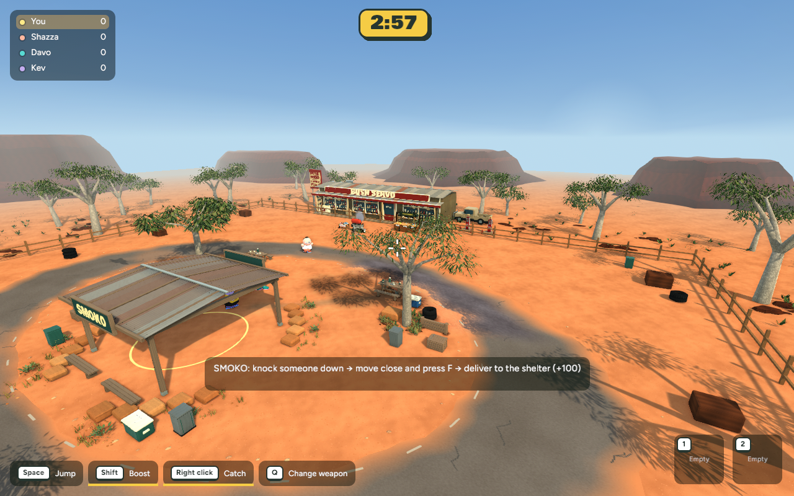
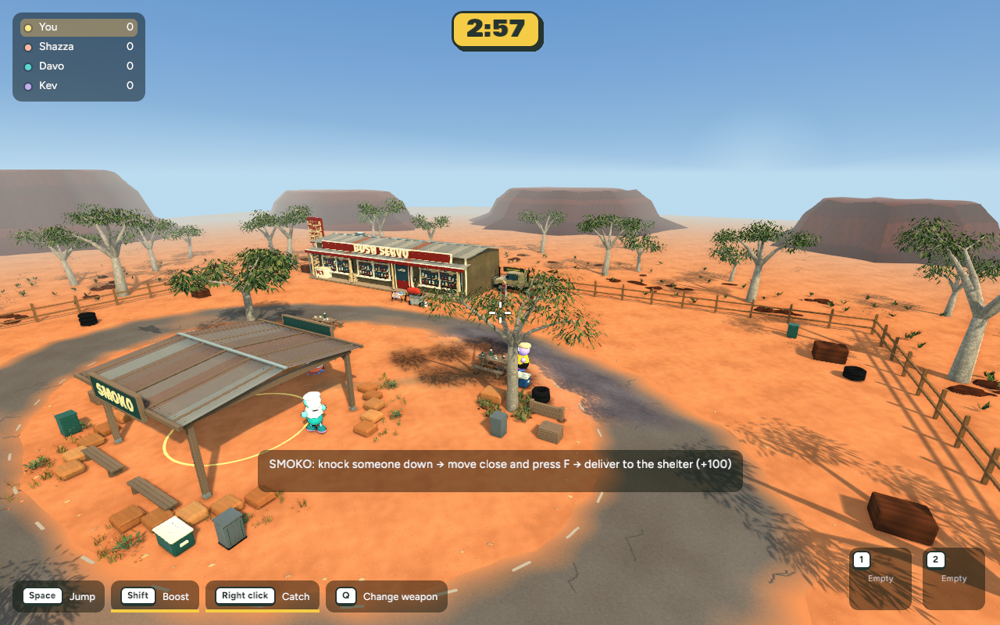
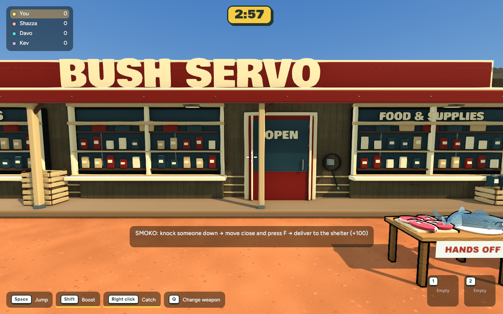
These earlier candidate captures and the footprint diagram show the supplies and spawns before adjustment.
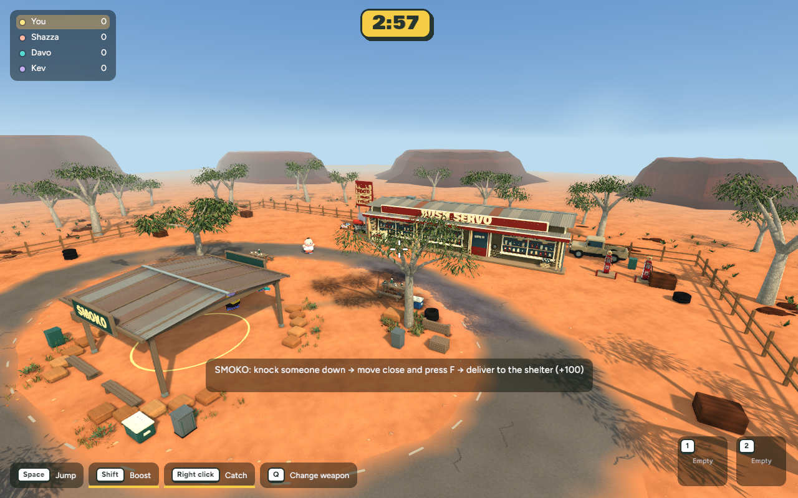
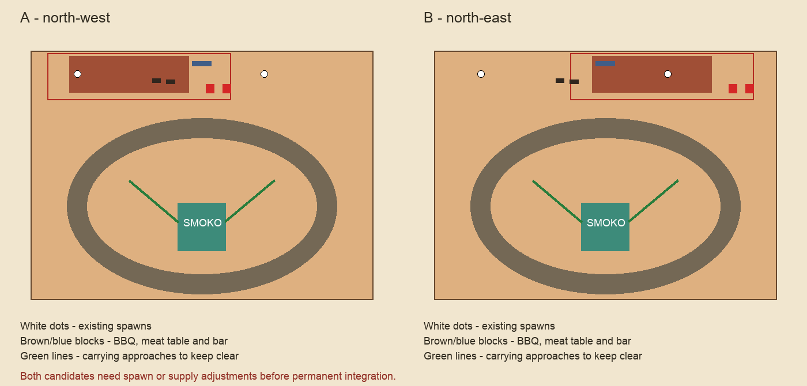
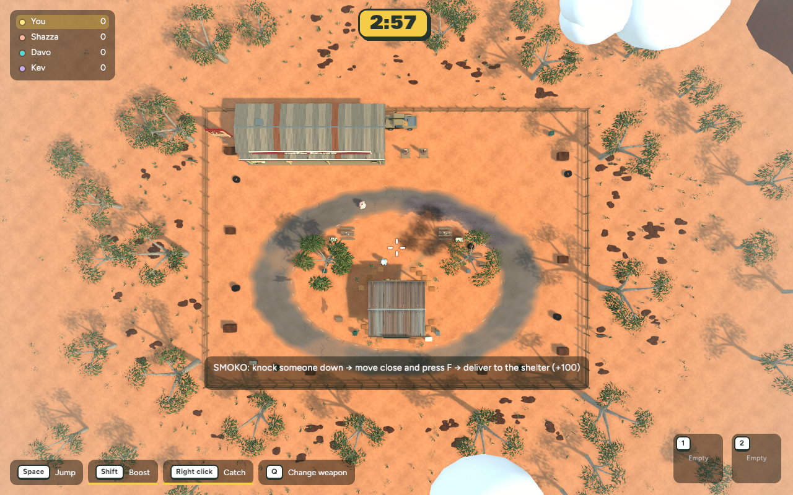
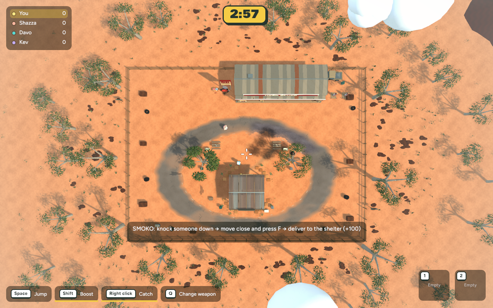
The menu changes the scene and camera when the selected map changes. Joined guests see the host's selection.
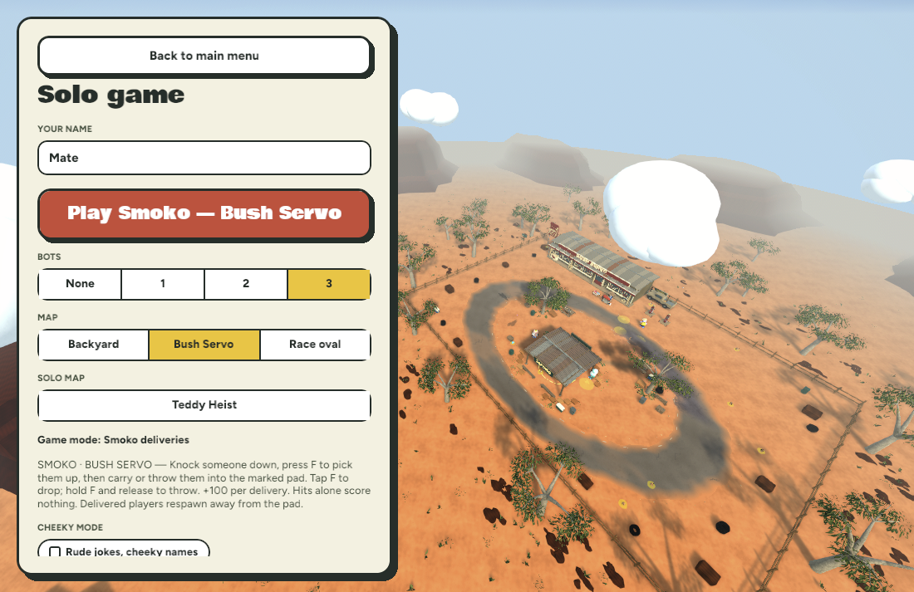
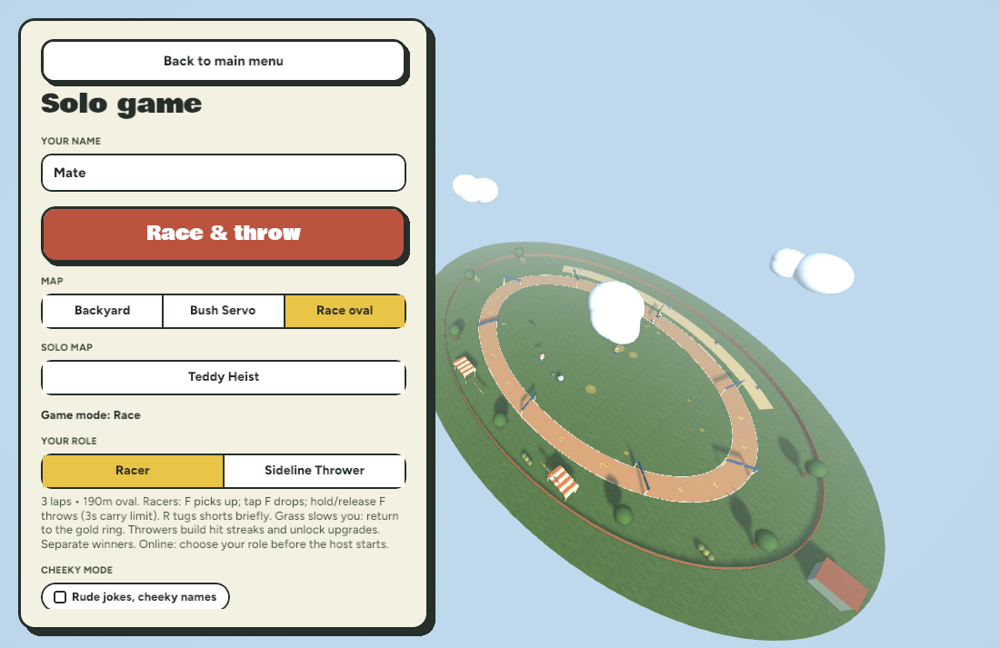
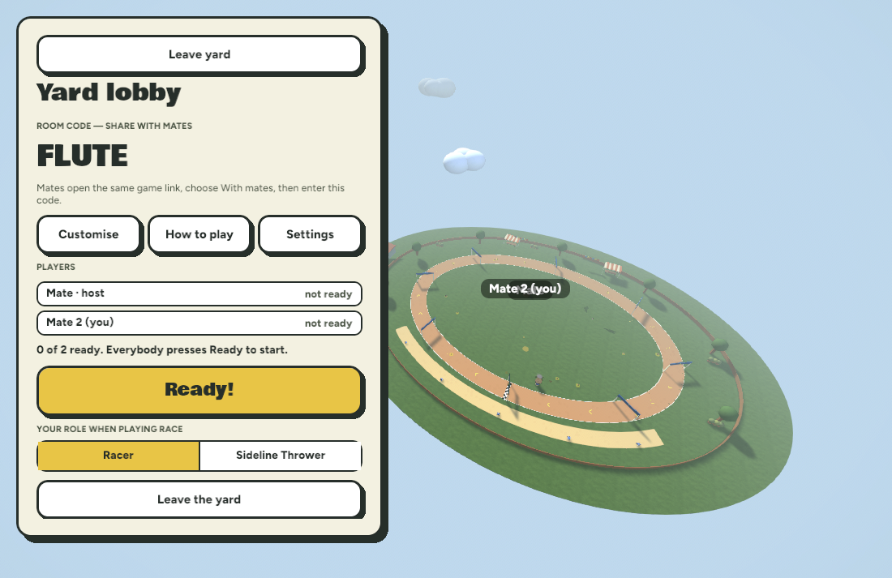
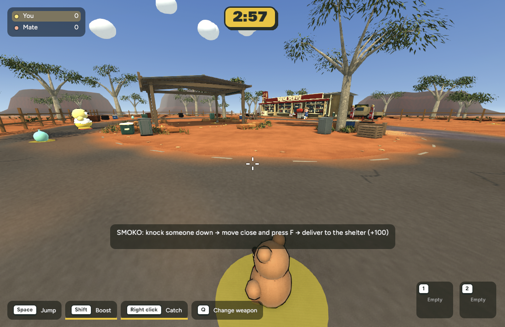